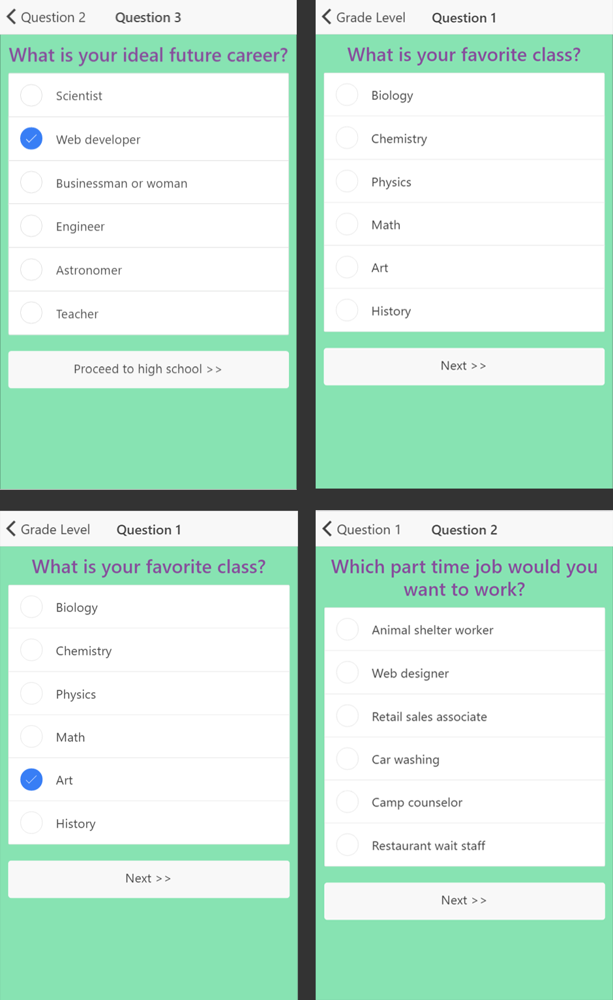

Path to STEM

HackHERS 2017 Best Beginner Hack Award
HackHERS is a 24-hour women-centric hackathon hosted at Rutgers University. During the course of the event, I collaborated with three of my peers in order to create a project that earned the Best Beginner Hack Award. Path to STEM is a mobile app game designed for children. The player chooses one of two cute, blob-shaped avatars named Sam Taylor and Echo Mac (their initials spell STEM!). Then, the player is presented with a series of questions about their interests, both school and hobby related. At the end of the questionnaire, the player is presented with a potential college major that correlates to their interests, and a list of career paths that could be pursued with that particular degree. The app was created using the Ionic open source framework.
Below is an example of a playthrough of the game.

